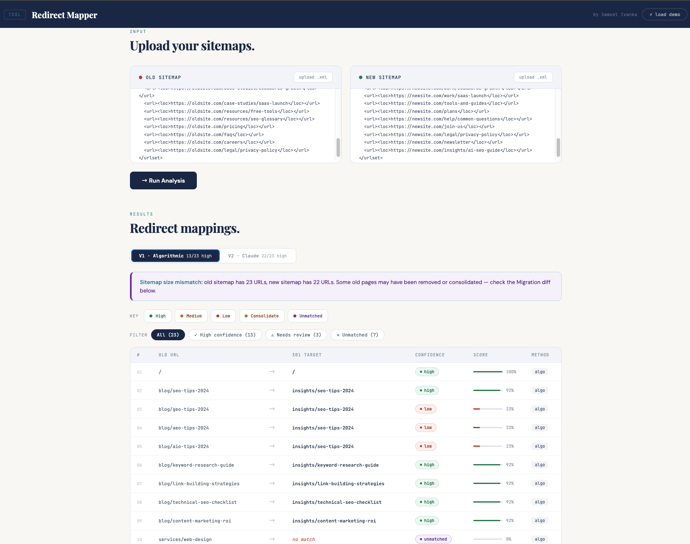
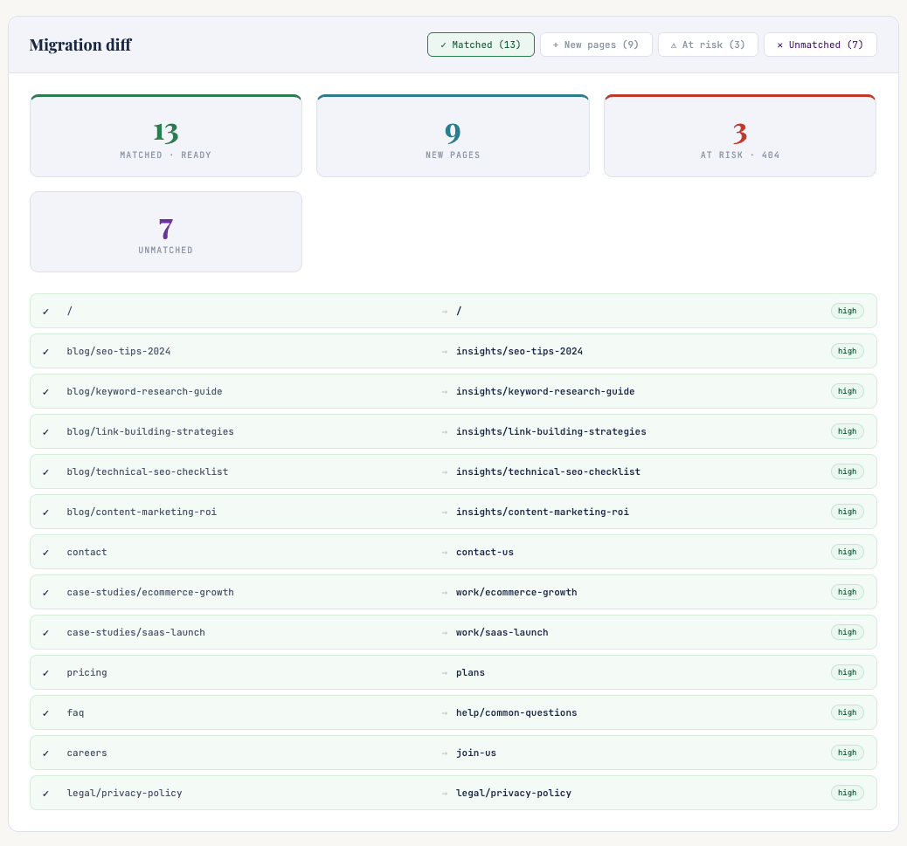

Redirect Mapper Redirect Mapper
A browser-based tool that automates 301 redirect mapping for site migrations — combining algorithmic URL similarity scoring with Claude AI semantic reasoning to resolve mappings that string-matching alone cannot handle.
Et browserbaseret værktøj der automatiserer 301 redirect-mapping til site-migreringer — kombinerer algoritmisk URL-similaritetsscore med Claude AI-semantisk ræsonnering til at løse mappings, som strengmatchning alene ikke kan håndtere.
The tool exists in two versions. V1 is fully algorithmic — no AI, no API key, no latency. V2 takes the URLs that V1 couldn't confidently resolve and passes them to Claude for semantic reasoning. The difference between those two outputs is the honest answer to the question: when does AI actually add value?
Værktøjet findes i to versioner. V1 er fuldt algoritmisk — ingen AI, ingen API-nøgle, ingen ventetid. V2 tager de URL'er som V1 ikke kunne løse med sikkerhed og sender dem til Claude til semantisk ræsonnering. Forskellen mellem de to output er det ærlige svar på spørgsmålet: hvornår tilføjer AI faktisk værdi?
See it in action Se det i aktion
Click any screenshot to open the live tool. Hit ⚡ load demo to run the pre-built migration scenario, or paste your own XML sitemaps. V1 runs instantly. V2 requires the access password — get in touch if you'd like to try it.
Klik på et skærmbillede for at åbne det live værktøj. Tryk ⚡ load demo for at køre det præbyggede migrationsscenarie, eller indsæt dine egne XML-sitemaps. V1 kører øjeblikkeligt. V2 kræver adgangskoden — kontakt mig hvis du vil prøve det.
Sitemaps must be standard XML sitemap format — a <urlset> file with <loc> tags. Most CMS platforms export this directly — WordPress via Yoast or RankMath, Screaming Frog via File → Export Sitemap. Sitemap index files (a sitemap that links to other sitemaps) are not supported — download the individual child sitemaps instead and run them separately.
Sitemaps skal være i standard XML sitemap-format — en <urlset>-fil med <loc>-tags. De fleste CMS-platforme eksporterer dette direkte — WordPress via Yoast eller RankMath, Screaming Frog via Fil → Eksporter Sitemap. Sitemap index-filer (et sitemap der linker til andre sitemaps) understøttes ikke — download de individuelle child-sitemaps i stedet og kør dem separat.


Why I built it Hvorfor jeg byggede det
Redirect mapping is one of those SEO tasks that looks simple on paper and falls apart in practice. You have an old sitemap, a new sitemap, and you need to match every old URL to its new destination before the site goes live — or risk losing rankings, backlink equity, and crawl budget to 404s. On large sites this means hundreds or thousands of rows matched by hand in a spreadsheet.
Redirect-mapping er en af de SEO-opgaver der ser simple ud på papiret og falder fra hinanden i praksis. Du har et gammelt sitemap, et nyt sitemap, og du skal matche hver gammel URL til dens nye destination inden sitet går live — ellers risikerer du at miste placeringer, backlink-egenkapital og crawl-budget til 404-fejl. På store sites betyder det hundredvis eller tusindvis af rækker matchet manuelt i et regneark.
The interesting problem is that URL slugs don't always reflect what a page is about after a migration. /services/paid-advertising becoming /what-we-do/performance-ads is obvious to a human but invisible to a string matcher. This is where AI earns its place — not replacing the algorithm, but handling the cases the algorithm flags as uncertain.
Det interessante problem er at URL-slugs ikke altid afspejler hvad en side handler om efter en migrering. /services/paid-advertising der bliver /what-we-do/performance-ads er indlysende for et menneske men usynlig for en strengmatcher. Det er her AI tjener sin plads — ikke ved at erstatte algoritmen, men ved at håndtere de tilfælde algoritmen markerer som usikre.
Two versions, one workflow To versioner, ét workflow
-
01
Parse both sitemaps — XML is read, all
<loc>URLs extracted into two lists. -
02
Root URL rule — if an old URL has no path (homepage), it is immediately matched to the new homepage at 100% confidence. No scoring needed.
-
03
Tokenisation — each URL path is split into tokens on slashes, hyphens, and underscores.
/blog/seo-tips-2024becomes["blog","seo","tips","2024"]. -
04
Jaccard similarity — for each old URL, every new URL is scored by the ratio of shared tokens to total unique tokens. Exact leaf-slug matches are boosted to 0.92.
-
05
Leaf-slug penalty — if two URLs share folder tokens but have different leaf slugs (e.g.
aeo-tipsvsseo-tips), the score is penalised. The slug is the page identity — a different slug is a different page. -
06
Synonym awareness — common slug equivalents are known by the algorithm:
contact/contact-us,faq/common-questions,careers/join-us, and more — these score 92% without being penalised as mismatches. -
07
Confidence thresholds — score ≥ 0.75 = high, ≥ 0.40 = medium, below = low, below 0.15 = unmatched (no forced bad match).
-
01
Filter weak matches — only URLs with medium, low, or unmatched confidence from V1 are passed to Claude. High-confidence matches are kept as-is. No unnecessary API calls.
-
02
Structured prompt — Claude receives the full list of available new URLs alongside each unresolved old URL and its current best guess, and is asked to reason semantically about page intent.
-
03
Semantic resolution — Claude maps
/about/mission→/company/our-storyand/faq→/help/common-questionsby understanding page intent, not string overlap. -
04
Consolidate decisions — when a page no longer exists in the new sitemap, Claude identifies the best available destination and flags it as consolidate rather than high confidence, signalling that a new page may be worth creating.
-
05
Reasoning output — each AI-resolved match includes a one-sentence explanation of why the match was made. Reviewable, auditable, not a black box.
-
06
Method attribution — every row in the output is tagged algo or claude so you always know which engine made each call.
Confidence tiers Tillidsgrader
Every mapped URL is assigned one of five confidence tiers. Each tier has a specific meaning and a specific recommended action — not just a colour.
Hver mappet URL tildeles en af fem tillidsgrader. Hver grad har en specifik betydning og en specifik anbefalet handling — ikke bare en farve.
Migration diff panel Migrerings-diff panel
A redirect map only tells half the migration story. The diff panel surfaces the full picture — what's ready to implement, what's brand new, what's at risk of becoming a 404, and what has no equivalent at all.
Et redirect-map fortæller kun halvdelen af migreringens historie. Diff-panelet afslører det fulde billede — hvad der er klar til implementering, hvad der er helt nyt, hvad der risikerer at blive en 404, og hvad der slet ikke har en pendant.
All old URLs mapped to a new destination with medium or high confidence. Ready to implement as 301s. Confidence score and method shown per row.
URLs in the new sitemap with no old equivalent. These go live fresh — no redirect needed. Not missing redirects, just genuinely new content.
Old URLs with low-confidence matches. The migration's danger zone — likely 404s, lost backlink equity, and crawl budget waste if left unaddressed.
Old URLs with no viable redirect target. Without a decision these will 404 after migration. Each one needs deliberate action before go-live.
Why it works the way it does Hvorfor det fungerer som det gør
Why Jaccard similarity, not edit distance? Hvorfor Jaccard similaritet, ikke edit distance?
Edit distance (Levenshtein) compares character sequences — it would rank /blog/seo as closer to /blag/seo than to /insights/seo, which is wrong for URL matching. Jaccard operates on token sets — it cares about which meaningful words are shared, not character position. Right tool for the job.
Edit distance (Levenshtein) sammenligner tegnsekvenser — det ville rangere /blog/seo som tættere på /blag/seo end på /insights/seo, hvilket er forkert for URL-matching. Jaccard opererer på token-sæt — det handler om hvilke meningsfulde ord der deles, ikke tegnposition. Rigtigt værktøj til jobbet.
Why a leaf-slug penalty? Hvorfor en leaf-slug-straf?
Without it, /blog/aeo-tips-2024 would score 92% against /blog/seo-tips-2024 because they share "blog", "tips", and "2024". But AEO and SEO are different disciplines — a false high-confidence match here would silently corrupt the redirect map. The penalty ensures that a different leaf slug is treated as a different page, not a near-miss of the same one.
Uden den ville /blog/aeo-tips-2024 score 92% mod /blog/seo-tips-2024 fordi de deler "blog", "tips" og "2024". Men AEO og SEO er forskellige discipliner — et falsk højt-sikkerhedsmatch her ville stille og roligt korruptere redirect-mappen. Straffen sikrer at et anderledes leaf-slug behandles som en anderledes side.
Why only send weak matches to Claude? Hvorfor sende kun svage matches til Claude?
Sending every URL to Claude would be wasteful, slow, and expensive at scale — and unnecessary. If the algorithm is already 92% confident that /blog/seo-tips maps to /insights/seo-tips, there's no value in asking Claude to confirm it. AI is used surgically, on the cases that actually need it.
At sende alle URL'er til Claude ville være spild, langsomt og dyrt i skala — og unødvendigt. Hvis algoritmen allerede er 92% sikker på at /blog/seo-tips mapper til /insights/seo-tips, er der ingen værdi i at bede Claude bekræfte det. AI bruges kirurgisk, på de tilfælde der faktisk har brug for det.
Why a consolidate tier instead of just high? Hvorfor en consolidate-grad i stedet for bare high?
When a page is gone from the new sitemap, a redirect to the most topically related page is better than a 404 — but it is not the same as a true 1-to-1 match. Calling it "high" would be misleading. The consolidate tier signals: this redirect will prevent a 404, but the original content has no dedicated home in the new site. That's an editorial decision the SEO needs to make consciously, not something a tool should silently paper over.
Når en side er forsvundet fra det nye sitemap, er en redirect til den mest emnemæssigt relaterede side bedre end en 404 — men det er ikke det samme som et sandt 1-til-1-match. At kalde det "high" ville være vildledende. Consolidate-graden signalerer: denne redirect vil forhindre en 404, men det originale indhold har intet dedikeret hjem på det nye site. Det er en redaktionel beslutning som SEO'en skal træffe bevidst.
Why show the reasoning column? Hvorfor vise ræsonneringskolonnen?
An SEO using this in a real migration needs to be able to defend every redirect decision to a client or developer. A black-box "Claude said so" is not acceptable. The reasoning column makes every AI decision auditable — you can agree with it, override it, or use it to explain the recommendation. Trust requires transparency.
En SEO der bruger dette i en rigtig migrering skal kunne forsvare enhver redirect-beslutning over for en klient eller udvikler. En black-box "Claude sagde det" er ikke acceptabelt. Ræsonneringskolonnen gør enhver AI-beslutning reviderbar — du kan acceptere den, tilsidesætte den eller bruge den til at forklare anbefalingen. Tillid kræver gennemsigtighed.
Why does the demo sitemap have intentionally hard cases? Hvorfor har demo-sitemappet bevidst svære tilfælde?
The demo isn't designed to make the tool look good — it's designed to show honestly where V1 breaks down and where V2 recovers. About 60% of URLs are simple folder renames that V1 handles fine. 25% are semantically renamed paths that V1 scores poorly but Claude resolves correctly. 15% are structural changes with no lexical overlap — unmatched by V1, assessed by Claude. That honest split is the actual demonstration.
Demoen er ikke designet til at få værktøjet til at se godt ud — den er designet til ærligt at vise hvor V1 bryder ned og hvor V2 genopretter. Ca. 60% af URL'er er simple mappeombygninger som V1 håndterer fint. 25% er semantisk omdøbte stier som V1 scorer dårligt men Claude løser korrekt. 15% er strukturelle ændringer uden leksikalsk overlap — umatched af V1, vurderet af Claude. Den ærlige fordeling er den faktiske demonstration.
What it doesn't do (yet) Hvad det ikke gør (endnu)
These are known limitations, not surprises. They're listed here because they point directly to what a production-grade version of this tool would need — and because SEOs who think carefully about migrations will notice them anyway.
Dette er kendte begrænsninger, ikke overraskelser. De er listet her fordi de peger direkte mod hvad en produktionsklar version af dette værktøj ville kræve — og fordi SEOs der tænker grundigt over migreringer alligevel vil bemærke dem.
URL-only matching — no content signal
Both V1 and V2 reason purely from URL paths. Two pages could have completely different slugs but cover identical topics — this tool would miss that entirely. The gold standard is matching by actual page content: H1, meta description, body text.
fix → fetch pages via Firecrawl, pass content to ClaudeNo 1-to-many or many-to-1 mapping
Real migrations often involve consolidations (3 thin pages merging into 1 pillar) or splits (1 page becoming multiple targeted pages). This tool assumes clean 1-to-1 mappings. Consolidation logic requires content-level analysis to determine which pages are topically redundant.
fix → content fetching + topic clustering stepNo manual override in the UI
If the algorithm or Claude gets a match wrong, there is no way to correct it inside the tool. You would need to edit the exported CSV manually. An editable results table with inline correction would be the obvious next step.
fix → editable table cells + re-exportNo redirect chain detection
If a site already has existing redirects and then runs a second migration, this tool could produce redirect chains (A → B → C) which waste crawl budget and slow page load. There is no lookup against existing redirect rules.
fix → existing redirect file input + chain resolverClaude reasons from URL strings only
Even in V2, Claude is making educated guesses based on the words in the URL path — not the actual page. For paths like /p/12847 or /en/cat/a/b/product-xyz, there is nothing for Claude to reason from beyond the ID or slug fragment.
Scale limit
Pasting XML into a textarea and running live Claude API calls works well for sites up to a few hundred URLs. Enterprise sites with 50,000–500,000 URLs would need batch processing, async queuing, and a backend layer — none of which exist in this browser-based version.
fix → backend API + async batch processingWhat V3 would look like Hvad V3 ville se ud
- Content-based matching — fetch page text via Firecrawl, compare H1 + body semantically, not just URL tokens
- Indholdsbaseret matching — hent sidetekst via Firecrawl, sammenlign H1 + brødtekst semantisk, ikke kun URL-tokens
- Thin content detection — flag pages below a word count threshold as consolidation candidates, clustered by topic similarity
- Tyndt indhold-detektion — markér sider under en ordgrænse som konsolideringskandidater, grupperet efter emne-lighed
- Merge vs. redirect decision layer — Claude reads both pages and recommends: 301 redirect, canonical tag, content merge, or keep separate
- Fletning vs. redirect-beslutningslag — Claude læser begge sider og anbefaler: 301 redirect, canonical tag, indholdsfletning eller hold adskilt
- Inline override — editable results table, correct any match before export without touching the CSV
- Inline rettelse — redigerbar resultattabel, ret ethvert match før eksport uden at røre CSV'en
- Redirect chain resolution — input existing .htaccess or redirect file, detect and flatten A → B → C chains before output
- Redirect-kædeløsning — input eksisterende .htaccess eller redirect-fil, registrer og fladgør A → B → C-kæder før output
- Backend batch processing for enterprise scale — async queuing, progress tracking, export to Google Sheets
- Backend batch-behandling til enterprise-skala — asynkron køing, fremgangssporing, eksport til Google Sheets